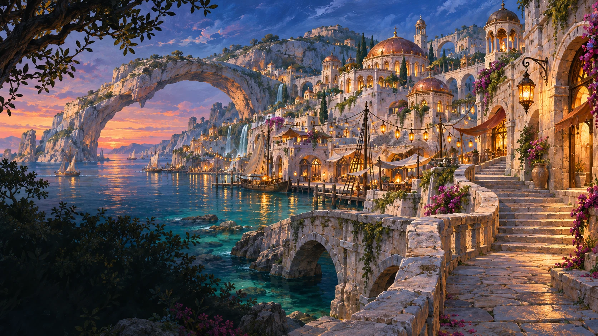
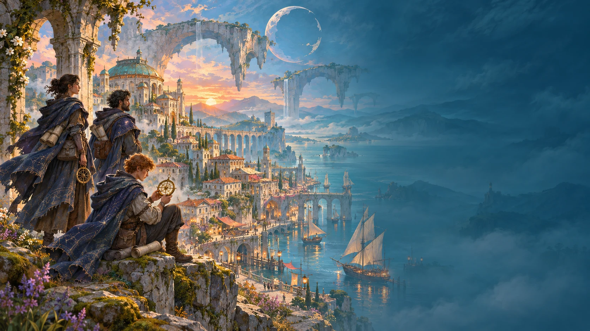
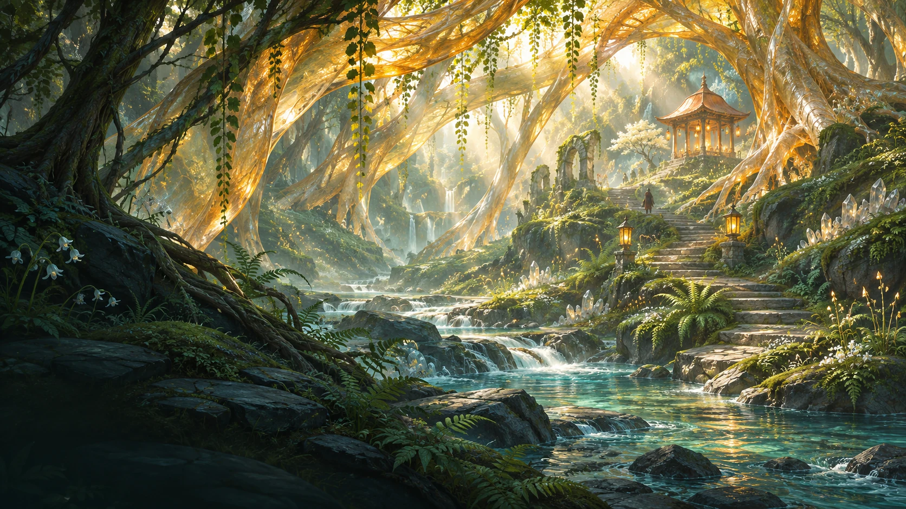
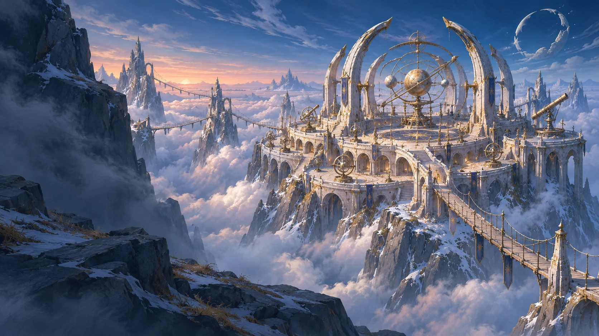
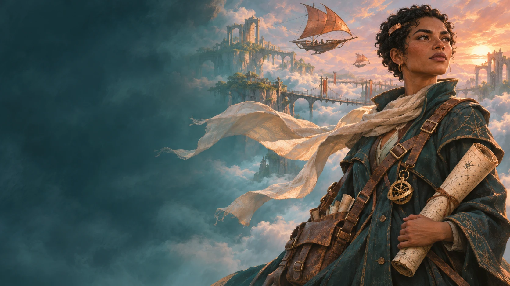

Follow the lights.
Find a welcome.
Sea air, open doors, and a hundred stories arriving with the tide. There’s always one more lantern burning for the traveler still on the road.
Lantern Coast Where every voyage begins
A light in the distance. A path you haven’t taken. Someone beside you, ready to see what comes next.
Find your next horizonSome journeys begin long before you know where you’re going.
In Veldrift, a lantern on the shore can lead to a forest of living light. A stranger’s map can become a shared memory. The world is wide. There’s room for your story.
Let curiosity leadThree places. A thousand reasons to wander.
Choose a horizon.

Sea air, open doors, and a hundred stories arriving with the tide. There’s always one more lantern burning for the traveler still on the road.
Lantern Coast Where every voyage begins
Beneath the amber boughs, the forest keeps its own soft light. Stay a little longer. The loveliest discoveries rarely ask to be found.
Glassroot Vale A forest that holds the light
Climb beyond the clouds to a place built for looking up. Here, the sky feels close enough to touch, and the next horizon is never the last.
Astral Reach An observatory above the clouds
Meet the Wayfarers. Cartographers, stargazers, and people who never quite outgrew their curiosity. A community built on the simple joy of going together.
Follow a Wayfarer’s mapBring your curiosity. Find your people.
Make a little more room for wonder.